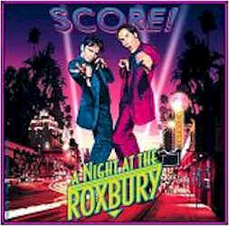
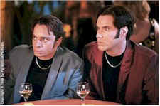
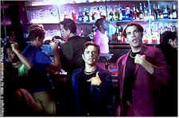
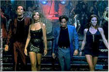

Contents | Features | Reviews | Books | Archives | Store |
 |
|
| Movie Credits | Buy It! |
A Night at the Roxbury
Review by Eddie Cockrell
Posted 9 October 1998
|  | Directed by John Fortenberry Starring
Will Farrell, Chris Kattan, Written by Steve Koren, Will Farrell |
A generation after Dan Aykroyd and Steve Martin created the comically carnal Festrunk brothers, those wild and crazy Czechoslovakian guys whose swingin' bachelor pad was the scene of their fruitless attempts to pick up women (remember the silly hats and fractured hipster gait?), the concept -- if not the execution -- of that gag has been recycled by current "Saturday Night Live" players Will Ferrell (the demented cheerleading guy) and Chris Kattan (the swallow-your-tongue funny Keri Strug imitation), who originally created the duo while members of the Groundlings comedy troupe. Moving the act from New York to Beverly Hills, toning down the implied coke snorting (they still rub their noses a lot, though) and adding just enough bizarrely interesting bits of business to fill out 83 minutes (OK, so the window-breaking gag from the trailer is shown twice), A Night at the Roxbury is, like its subjects, an absurdly funny, relentlessly cheerful premise that overstays its welcome by half.
By day, Steve (Ferrell) and Doug (Kattan) Butabi work in retail at the southern California fake flower shop of their father Kamehl (Dan Hedaya), who is such a successful businessman that he can afford a hideous Beverly Hills mansion (where the boys share a cheesily decorated room), a surgically altered trophy wife (Loni Anderson) and twin Irish setters named "Captain" and "Tennille." By night, Steve and Doug cruise the nightclubs on the Sunset Strip, intent upon meeting and bedding women. Despite their never-say-die optimism, they lack any social graces whatsoever, prompting one victim of their spastic, aggressive dance moves to call them "ugly, pathetic losers" to their faces.
The boys dream of opening their own club, and to that end leverage a chance meeting with former "21 Jump Street" star Richard Grieco -- looking at least as embalmed as Rob Lowe did in his Wayne's World turn, suggesting that it might be on purpose (but in this case probably isn't) -- to infiltrate the legendary Roxbury club and suck up to the jovial, goateed owner (an uncredited Chazz Palminteri, whose ongoing gag involves accusing everyone in sight of "grabbing my ass").
Vixenish golddiggers Cambi (Elisa Donovan) and Viveca (Gigi Rice) mistake them for high rollers and provide what turns out to be their first sexual experiences, after which Steve is pressured into marrying the daughter of his father's future business partner (Molly Shannon, looking as sexy/scary as ever). Will Steve's upcoming nuptials destroy the strangely close bond with his sulking brother (who moves to the guest house across from the pool and disconsolately scarfs whipped cream straight from the can)? Will Richard Grieco get sued? Will Doug find comfort in the arms of the Credit Vixen (Meredith Scott Lynn)? And what about their trainer, Doug (wild-eyed Lochlyn Munro, the only funny thing about Dead Man On Campus)?
The film was apparently in trouble early in production, as veteran TV director Peter Markle ("The X-Files," "Homicide: Life on the Street," "Millennium") was replaced after two weeks by John Fortenberry , who helmed that great Julie Brown Madonna spoof "Medusa: Dare to Be Truthful." A Night at the Roxbury has the same feel as that cable classic, drawing laughs not from pratfalls and physical humor as much from the deadpan way in which the non sequitir-heavy material ("you're mad cowing on me!") is delivered (the script was reportedly doctored with uncredited contributions from Jim Carrey, the Look Who's Talking franchise's Amy Heckerling and The Usual Suspects scribe Christopher McQuarrie). That kind of comedy is a risky business, as it can quite often come off as listless and uninspired (precisely the way most critics are reading the film). Yet the next SNL spinoff, Superstar, which features Shannon's Mary Catherine Gallagher character, also co-stars Will Ferrell and is also written by "Seinfeld" alum Steve Koren -- suggesting that the troupe might be on to something more substantial than the first reviews of A Night at the Roxbury would indicate (this theory is bolstered by the submerged subplot that finds the boys confronting their Yemenite background, a provocative subject that is dropped like a hot potato after a couple of dinner table jokes).
Elsewhere, the film delivers minor pleasures, from the inspired casting of TV's original Dobie Gillis, Dwayne Hickman, as Shannon's sunny dad to the insistent use of the Haddaway dance "classic" "Is This Love?" (the soundtrack also manages to find room for Bruce Springsteen's "Secret Garden," the 1970s chestnut "Brandy (You're a Fine Girl)" and the theme from "Cheers"). There are also strong jabs at materialism (Shannon screams "Ikea!" at a pivotal intimate moment), sentimentality and classic movie sequences -- including pointed spoofs of Saturday Night Fever, The Graduate, Say Anything... and Jerry Maguire.
The print caught was dark and fuzzy, although the previous work of busy cinematographer Francis Kenny (whose credits include Bean, the SNL spinoffs Wayne's World 2 and Coneheads, as well as two projects for the legendary Nicolas Roeg, the 1989 TV remake of Tennessee Williams' "Sweet Bird of Youth" and the barely-released theatrical thriller Cold Heaven) suggests that might've been the venue and not the print itself. The production design of Steven J. Jordan is particularly atmospheric, capturing the flavor of the milieu with the same detail and wit he brought to the misunderstood BASEketball, The Brady Bunch Movie and Clueless (which shares the same garish Beverly Hills sensibility, as well as Hedaya as the doofus dad).
As ephemeral as the club itself (which is now a Japanese restaurant), A Night at the Roxbury will almost certainly join that growing list of pleasant but wispy comedies -- So I Married an Ax Murderer comes to mind, somewhere between the genuinely subversive Stuart Saves His Family and the surreal yet impenetrable hijinks of It's Pat -- destined to score as a video rental and cable perennial. Come to think of it, had this agreeably stupid spoof started there and been shorn of an hour, maybe it'd be getting positive blurbs in the TV Guide ads.
Contents | Features | Reviews | Books | Archives | Store
Copyright © 1999 by Nitrate Productions, Inc. All Rights Reserved.